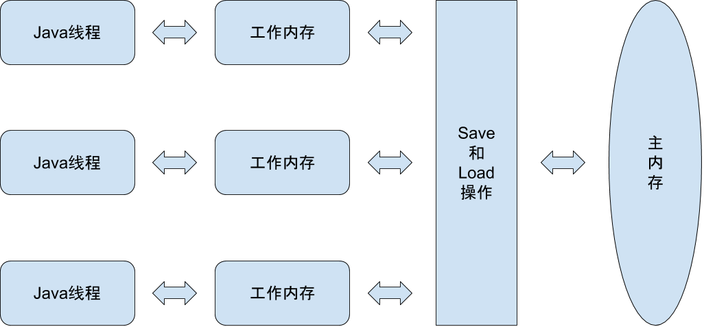

Java内存模型与线程
1.Java内存模型
Java内存模型的定义是为了屏蔽掉各种硬件和操作系统的内存访问差异，以实现让Java程序在各种平台下都能达到一致的内存访问效果，并且制定程序中各个变量的访问规则，即在虚拟机中将变量存储到内存和从内存中取出变量这样的底层细节。这里的变量指的是实例字段、静态字段和构成数组对象的元素，不包括局部变量和方法参数，因为后者是线程私有的。
1）主内存和工作内存
Java内存模型规定了所有的变量都存储在主内存（Main Memory）中，每条线程还有自己的工作内存（Working Memory），线程的工作内存中保存了被该线程使用到的变量的主内存副本拷贝，线程对变量的所有操作（读取、赋值等）都必须在工作内存中进行，而不能直接读写主内存中的变量。不同的线程之间也无法直接访问对方工作内存中的变量，线程间变量值的传递均需要通过主内存来完成。线程、主内存、工作内存三者的交互关系如下图。

2）内存间的交互操作
关于主内存与工作内存之间的具体交互协议，Java内存模型中定义了以下8种操作来完成，虚拟机实现时必须保证下面提及的每一种操作都是原子的、不可再分的（对于double、long类型的变量来说，load、store、read、write操作在某些平台上允许有例外）。
- Lock（锁定）：作用于主内存的变量，它把一个变量标示为一条线程独占的状态。
- Unlock（解锁）：作用于主内存的变量，它把一个处于锁定状态的变量释放出来，释放后的变量才可以被其他线程锁定。
- Read（读取）：作用于主内存的变量。它把一个变量的值从主内存传输到线程的工作内存中，以便随后的load动作使用。
- Load（载入）：作用于工作内存的变量，它把read操作从主内存中得到的变量值放入工作内存的变量副本中。
- Use（使用）：作用于工作内存的变量，它把工作内存中的一个变量的值传递给执行引擎，每当虚拟机遇到一个需要使用到变量的值的字节码指令时将会执行这个操作。
- Assign（赋值）：作用于工作内存的变量，它把一个从执行引擎接收到的值赋给工作内存的变量，每当虚拟机遇到一个给变量赋值的字节码指令时执行这个操作。
- Store（存储）：作用于工作内存的变量，它把工作内存中的一个变量的值传送到主内存中，以便随后的write操作使用。
- Write（写入）：作用于主内存的变量，它把store操作从工作内存中得到的变量的值放入主内存的变量中。
Java内存模型还规定了在执行上述8种基本操作时必须满足如下规则：
- 不允许read和load、store和write操作之一单独出现，即不允许一个变量从主内存读取了但工作内存不接受，或者从工作内存发起了回写了但主内存不接受的情况出现。
- 不允许一个线程丢弃它的最近的assign操作，即变量在工作内存中改变了之后必须把该变化同步回主内存。
- 不允许一个线程无原因地（没有发生过任何assign操作）把数据从线程的工作内存同步回主内存中。
- 不允许在工作内存中直接使用一个未被初始化（load或assign）的变量，换句话说，就是对一个变量实施use、store操作之前，必须先执行assign和load操作。
- 如果对一个变量执行lock操作，将会清空工作内存中此变量的值，在执行引擎使用这个变量前，需要重新执行load或assign操作初始化变量的值。
- 如果一个变量事先没有被lock操作锁定，那就不允许对它执行unlock操作，也不允许去unlock一个被其他线程锁定住的变量。
- 对一个变量执行unlock操作之前，必须把此变量同步回主内存中（执行store、write操作）。
3）volatile型变量的规则
- 保证变量对所有线程的可见性
保证此变量对所有线程的可见性，这里的“可见性”是指当一条线程修改了这个变量的值，新值对于其他线程来说是可以立即得知的。而普通变量的值在线程间传递均需要通过主内存来完成。
由于volatile变量只能保证可见性，在不符合以下两条规则的场景中，需要通过加锁（使用synchronized或者java.util.concurrent中的原子类）来保证原子性。
- 运算结果并不依赖变量的当前值，或者能够确保只有单一的线程修改变量的值。
- 变量不需要与其他的状态变量共同参与不变约束。
- 禁止指令重排序优化
普通的变量仅仅会保证在该方法的执行过程中所有依赖赋值结果的地方都能获取到正确的结果，而不能保证变量赋值操作的顺序与程序代码中的执行顺序一致。
对于volatile修饰的变量来说，多执行了一个“lock addl $0x0,（%esp）”操作，相当于一个内存屏障（指令重排序时不能把后面的指令重排序到内存屏障之前的位置），只有一个CPU访问内存时，并不需要内存屏障，但如果有两个或以上的CPU访问同一块内存，且其中有一个在观测另一个，就需要内存屏障来保证一致性了。
因此lock addl $0x0,（%esp）指令把修改同步到内存时，意味着所有之前的操作都已经执行完成，就形成了“指令重排序无法越过内存屏障”的效果。
volatile关键字的意义在于某些情况下volatile的同步机制的性能要优于锁（使用synchronized关键字或者java.util.concurrent包里的锁），但是由于虚拟机对锁实行的许多消除和优化，很难量化具体比synchronized快多少。但是可以确定一点：volatile变量的读操作性能消耗与普通变量几乎没有差别，但写操作由于在本地代码中插入许多内存屏障指令来保证处理器不发生乱序执行，会比普通变量的写操作慢一些。
4）long和double型变量的规则
Java内存模型要求lock、unlock、read、load、assign、use、store、write这8个操作都具有原子性，但对于64位的数据类型（double和long），在模型中定义了一条非原子性协定（Nonatomic Treatment of double and long Variables）：允许虚拟机将没有被volatile修饰的64位数据的读写操作划分为两次32位的操作来进行。
不过目前商用虚拟机几乎都选择把64位数据的读写操作作为原子操作来对待。
5）原子性、可见性与有序性
Java内存模型是围绕着在并发过程中如何处理原子性、可见性和有序性这3个特征来建立的。
- 原子性（Atomicity）
一个操作是不可中断的，要么全部执行完成，要么全部不完成，不可能停滞在中间某个环节。
由Java内存模型来直接保证的原子性变量操作包括read、load、assign、use、store和write，基本数据类型的访问读写是具备原子性的。
- 可见性（Visibility）
可见性是指当一个线程修改了共享变量的值，其他线程能够立即得知这个修改。
Java内存模型通过在变量修改后将新值同步回主内存，在变量读取前从主内存刷新变量值这种依赖主内存作为传递媒介的方式来实现可见性的。而volatile的特殊规则保证了新值可以立即同步到主内存，以及每次使用前立即从主内存刷新，可以说是保障了多线程操作时变量的可见性。除了volatile外，synchronized和final也能实现可见性。
- 有序性（Ordering）
如果在本线程观察，所有的操作都是有序的（线程内表现为串行的语义（As-If-Serial））；如果在一个线程中观察另一个线程，所有的操作都是无序的（“指令重排序”现象和“工作内存与主内存同步延迟”现象）。
6）先行发生原则
先行发生是Java内存模型中定义的两项操作之间的偏序关系，如果说操作A先发行于操作B，则操作A产生的影响（包括修改了内存中共享变量的值、发送了消息、调用了方法等）能被操作B观察到。
下面是Java内存模型下无需任何同步器协助就存在的先行发生关系。
- 程序次序规则（Program Oder Rule）：在一个线程内，按照控制流顺序，书写在前面的操作先行发生于书写在后面的操作。
- 管理锁定规则（Monitor Lock Rule）：一个unlock操作先行发生于后面同一个锁的lock操作。
- volatile变量规则（Volatile Variable Rule）：对一个volatile变量的写操作先行发生于后面对这个变量的读操作。
- 线程启动规则（Thread Start Rule）：Thread对象的start()方法先行发生于此线程的每一个动作。
- 线程终止规则（Thread Termination Rule）：线程中所有操作都先行发生于此线程的终止检测。
- 线程中断规则（Thread Interruption Rule）：对线程interrupt()方法的调用先行发生于被中断线程的代码检测到中断事件的发生。
- 对象终结规则（Finalizer Rule）：一个对象的初始化完成（构造函数执行结束）先行发生于它的finalize()方法。
- 传递性（Transitivity）：如果操作A先行发生于操作B，操作B先行发生于操作C，则操作A先行发生于操作C。
先行发生原则与时间先后顺序没有太大关系，所以衡量并发安全问题的时候不要受到时间顺序的干扰，一切以先行发生原则为准。
2.Java与线程
1）线程的实现
线程是比进程更轻量级的调度执行单位，线程的引入，可以把一个进程的资源分配和执行调度分开，各个线程既可以共享进行资源，又可以独立调度（线程是CPU调度的基本单位）。
实现线程主要有3种方式：使用内核线程实现、使用用户线程实现和使用用户线程加轻量级进程混合实现。
2）线程的调度
线程调度是系统为线程分配处理器使用权的过程，主要调度方式有两种，分别是协同线程调度（Cooperative Threads-Scheduling）和抢占式线程调度（Preemptive Threads-Scheduling）。
- 协同式线程调度（Cooperative Threads-Scheduling）
如果使用协同式调度的多线程系统，线程的执行时间由线程本身来控制，线程把自己的工作执行完了之后，要主动通知系统切换到另外一个线程上。协同式多线程的最大好处是实现简单，而且切换操作对线程自己是可知的。坏处就是线程执行时间不可控制，甚至如果一个线程编写有问题，一直不告知系统进行线程的切换，那么程序就会一直阻塞在那里。
- 抢占式线程调度（Preemptive Threads-Scheduling）
如果使用抢占式调度的多线程系统，那么每个线程将由系统来分配执行时间，线程的切换不由线程本身来决定。在这种实现线程调度的方式下，线程的执行时间是系统可控的，不会存在一个线程导致整个进程阻塞的问题，Java使用的线程调度方式就是抢占式调度。
3）状态转换
Java语言定义了6种线程状态，在任意一个时间点，一个线程只能有且只有其中一种状态。
- 新建（New）
创建后尚未启动的线程处于这种状态。
- 运行（Runable）
Runable包括了操作系统线程状态的Runable和Ready，也就是处于此状态的线程有可能正在执行，也有可能正在等待CPU为它分配执行时间。
- 无限期等待（Waiting）
处于这种状态的线程不会被分配CPU执行时间，它们要等待被其他线程显式地唤醒。以下方法会让线程陷入无限期的等待状态：
- 没有设置Timeout参数的Object.wait()方法。
- 没有设置Timeout参数的Thread.join()方法。
- LockSupport.park()方法。
- 限期等待（Timed Waiting）
处于这种状态的线程也不会被分配CPU执行时间，不过无须等待被其他线程显式地唤醒，在一定时间之后它们会由系统自动唤醒。以下方法会让线程进入限期等待状态：
- Thread.sleep()方法。
- 设置了Timeout参数的Object.wait()方法。
- 设置了Timeout参数的Thread.join()方法。
- LockSupport.parkNanos()方法。
- LockSupport.parkUntil()方法。
- 阻塞（Blocked）
线程被阻塞了。“阻塞状态”与“等待状态”的区别是“阻塞状态”在等待获取一个排他锁，这个事件将在另一个线程放弃这个锁的时候发生；而“等待状态”则是在等待一段时间，或者唤醒动作的发生。在程序等待进入同步区域的时候，线程将进入这种状态。
- 结束（Terminated）
已终止线程的线程状态，线程已经结束执行。
上述状态在遇到特定时间发生的时候将会互相转换，它们的转换关系入下图所示。
3.线程安全
1）线程安全的定义
当多个线程访问一个对象时，如果不用考虑这些线程在运行时环境下调度和交替执行，也不需要进行额外的同步，或者在调用方进行任何其他的协调操作，调用这个对象的行为都可以获得正确的结果，那这个对象是线程安全的。
2）Java语言中的线程安全
按照线程安全的“安全程度”由强至若来排序，我们可以将Java语言中各种操作共享的数据分为5类：不可变、绝对线程安全、相对线程安全、线程兼容和线程对立。
- 不可变
在Java语言中（JDK1.5以后），不可变的对象一定是线程安全的，无论是对象的方法实现还是方法的调用者，都不需要再采用任何线程安全保障措施。只要一个不可变的对象被正确地构建出来（没有发生this引用逃逸的情况），那其外部的可见状态永远也不会改变。“不可变”带来的安全性是最简单和纯粹的。
Java语言中，如果共享数据是一个基本数据类型，那么只要在定义时使用final关键字修饰它就可以保证它是不可变的。如果共享数据是一个对象，那就需要保证对象的行为不会对其状态产生任何影响才行。在Java API中符合不可变要求的类型有String、枚举类型、以及java.lang.Number的部分子类，如Long和Double等数值包装类，BigInterger和BigDecimal等大数据类型。
- 绝对线程安全
绝对的线程安全的定义是很严格的，通常需要付出很大的代价。需要完全满足一个类达到“不管运行时环境如何，调用者都不需要任何额外的同步措施”。
- 相对线程安全
相对线程安全就是通常意义上所讲的线程安全，它需要保证对这个对象单独的操作时线程安全的，在调用的时候不需要额外的保障措施，但对于一些特定顺序的连续调用，就可能需要在调用端使用额外的同步手段来保障调用的正确性。
- 线程兼容
线程兼容是指对象本身并不是线程安全的，但是可以通过在调用端正确地使用同步手段来保证对象在并发环境中可以安全地使用。
- 线程对立
线程对立是指无论调用端是否采取了同步措施，都无法在多线程环境中并发使用的代码。
3）线程安全的实现方式
- 互斥同步
互斥同步是常见的一种并发正确性保障手段，也叫阻塞同步。同步是指在多个线程并发访问共享数据时，保障共享数据在同一个时刻只能被一个线程使用。互斥是实现同步的一种手段，临界区、互斥量和信号量都是主要的互斥实现方式。
在Java中，最基本的互斥同步手段就是synchronized关键字，synchronized关键字经过编译之后，会在同步块的前后分别形成monitorenter和monitorexit这两个字节码指令，这两个字节码都需要一个reference类型的参数来指明要锁定和解锁的对象。如果Java程序中的synchronized明确指定了对象参数，那就是这个对象的reference，如果没有明确指定，那就根据synchronized修饰的是实例方法还是类方法，去取对应的对象实例或Class对象来作为锁对象。
在执行monitorenter指令时，首先要尝试获取对象的锁。如果这个对象没被锁定，或者当前线程已经拥有了那个对象的锁，把锁的计数器加1，在执行monitorexit指令时会将锁计数器减1，当计数器为0时，锁就被释放。如果获取对象锁失败，那当前线程就要阻塞等待，直到对象锁被另一个线程释放为止。
有两点需要注意，synchronized同步块对同一条线程说是可重入的，不会出现自己把自己锁死的问题；同步块在已进入的线程执行完之前，会阻塞后面其他线程的进入。
synchronized是Java语言中一个重量级（Heavyweight）的操作，因为Java的线程是映射到操作系统的原生线程之上的，如果要阻塞或唤醒一个线程，都需要操作系统来帮忙完成，这就需要从用户态转换到核心态中，状态转换需要耗费很多的处理器时间。
己把自己锁死的问题；同步块在已进入的线程执行完之前，会阻塞后面其他线程的进入。
除了synchronized之外，还可以使用java.util.concurrent包中的重入锁（ReentrantLock）来实现同步，在基本用法上与synchronized相似，都具备一样的线程重入特性，写法上略有区别，一个表现为API层面的互斥锁（lock()和unlock()方法配合try/finally语句块来完成），一个表现为原声语法层面的互斥锁。
己把自己锁死的问题；同步块在已进入的线程执行完之前，会阻塞后面其他线程的进入。
ReentrantLock增加一些高级功能，主要有：等待可中断、可实现公平锁、锁可以绑定多个条件。
- 等待可中断：当持有锁的线程长期不释放锁的时候，正在等待的线程可以选择放弃等待，改为处理其他事情，有利于处理执行时间长的同步块。
- 公平锁：多个线程在等待同一个锁时，必须按照申请锁的时间顺序来依此获得锁；而非公平锁则不保证这一点，在锁被释放时，任何一个等待的线程都有机会获得锁。synchronized中的锁是非公平的，ReentrantLock默认情况下也是非公平的，但可以通过带布尔值的构造函数要求使用公平锁。
- 锁绑定多个条件：一个ReentrantLock对象可以同时绑定多个Condition对象，只需多次调用newCondition()方法即可。而在synchronized中，锁对象的wait()和notify()或notifyAll()方法可以实现一个隐含的条件，如果要和多余一个的条件关联，需要添加一个锁。
- 非阻塞同步
互斥同步主要问题是在进行线程阻塞和唤醒所带来的性能问题，因此这种同步也称为阻塞同步。它属于一种悲观锁，无论共享数据是否会出现竞争 ，它都要进行加锁、用户态核心态转换、维护锁计数器和检查是否有被阻塞的线程需要唤醒等操作。
而随着硬件指令集的发展，出现了非阻塞同步，它是一种基于冲突检测的乐观锁，实现方式是先进行操作，如果共享数据有争用，就采取补偿措施。这里需要硬件指令集的发展是因为需要操作和冲突检测两个步骤依靠硬件的保障来具备原子性，硬件保障一个从语义上需要多次操作的行为只通过一条处理器指令来完成，这类指令常用的有测试并设置、获取并增加、交换、比较并交换（CAS）、加载链接/条件存储。
其中CAS指令需要3个操作数，分别是内存位置（在Java中可以理解为变量的内存地址）、旧的预期值和新值。CAS指令执行时，当内存地址符合旧预期值时，处理器用新值更新内存地址的值，否则它就不执行更新，但无论是否更新了内存地址的值，都会返回旧值，上述的操作就是一个原子操作。
CAS的好处在于不需要使用传统的锁机制来保证线程安全，也就意味着没有线程切换和阻塞的额外消耗。但CAS的一个重要缺点在于如果操作一直执行不成功（一直在死循环中），会对CPU造成较大的执行开销。
- 无同步方案
保障线程安全并不是一定要进行同步，同步只是保证共享数据争用时的正确性手段，但如果一个方法本生就不涉及共享数据，那它就不需要任何同步措施保证正确性。可重入代码和线程本地存储就是其中的两类。
- 可重入代码（Reentrant Code）：也叫纯代码，可以在代码执行的任何时刻中断它，转而去执行其他代码，而在控制权返回后，原来的程序不会出现错误。所有的可重入代码都是线程安全的，但并非线程安全的代码都是可重入的。可重入代码有一些共同的特性，比如不依赖存储在堆上的数据和公用的系统资源、用到的状态量都是由参数中传入、不调用非可重入的方法。
- 线程本地存储（Thread Local Storage）：当一段代码所需要的数据与其他代码共享，但只要保证共享数据的代码在同一个线程中执行，这样无须同步也能保证线程之间不出现数据争用。例如ThreadLocalMap对象存储了一组以ThreadLocal.threadLocalHashCode为键，本地线程变量为值的K-V值对。
4.锁优化
通过实现下列各种锁优化技术，提高线程间共享数据的效率，解决竞争问题，从而提高程序执行效率。
1）自旋锁
由于互斥同步对性能最大的影响是阻塞的实现，挂起线程和恢复线程的操作都需要转入核心态中完成，这些操作给系统的并发性能带来了很大的压力，同时许多应用共享数据的锁定时间只会持续很短一段时间，为了这段时间去挂起和恢复线程并不值得，因此引入了自旋锁。自旋锁目的是为了让线程执行一个忙循环（自旋），但它不能代替阻塞，虽然避免了线程切换的开销，但它是要占用处理器时间的，因此如果锁被占用时间很短，自旋等待的效果就会非常好，反之，自旋的线程只会白白消费处理器资源，反而带来性能上的浪费。自旋等待的时间必须有一个限度，默认是10次，可以使用参数-XX:PreBlockSpin来更改。
2）锁消除
锁消除是指虚拟机即时编译器在运行时，对一些代码上要求同步，但是被检测到不可能存在共享竞争数据的锁进行消除。锁消除的主要判断依据来源于逃逸分析的数据支持，如果在判断一段代码中，堆上的所有数据都不会逃逸出去从而被其他线程访问到，那就可以把它们当作栈上的数据对待，认为它们是线程私有的。
3）锁粗化
原则上推荐将同步块的作用范围限制得尽可能小——只在共享数据的实际作用域才进行同步，这样为了使得需要同步的操作数量尽可能变小，如果存在锁竞争，等待的锁也可以尽快拿到锁。
但是如果一系列的连续操作都对同一个对象反复加锁和解锁，甚至加锁操作出现在循环体之中，那即使没有线程竞争，频繁地互斥也会导致不必要的性能损耗。如果虚拟机探测到这样一连串的操作都对同一个对象加锁，就会把加锁同步对范围扩展（粗化）到整个操作序列的外部，这样只需要加锁一次。
4）轻量级锁
“轻量级”是相较于传统锁而言的，本意是在没有多线程竞争的前提下，减少传统的重量级锁使用操作系统互斥量产生的性能消耗，依据是“对于绝大部分锁，在整个同步周期内都是不存在竞争的”。但如果存在竞争，轻量级锁会比传统的重量级锁更慢（除了互斥量的开销外，还额外发生了CAS操作）。HotSpot虚拟机对象头部分的Mark Word是实现轻量级锁和偏向锁的关键。
- 加锁过程
轻量级锁的加锁过程实现方式是，在代码进入同步块的时候，如果此时同步对象没有锁定，虚拟机会在当前线程的栈帧中建立一个名为锁记录（Lock Record）的空间，用于存储锁对象目前的Mork Word的拷贝（被称为Displaced Mark Word）。然后虚拟机使用CAS操作尝试将对象头的Mark Word更新为指向Lock Record的指针，如果这个更新成功了，那么这个线程就拥有了这个对象的锁，并把对象Mark Word的锁标志位转换成“00”（轻量级锁），如果更新操作失败了，虚拟机会检查对象的Mark Word是否指向当前线程的栈帧，如果是的话，说明当前线程已经拥有了这个对象的锁，那就可以直接进入同步块继续执行，否则说明梓翰个对象已经被其他线程抢占了。如果有两条以上的线程争用一个锁，那轻量级锁就不再有效，要膨胀为重量级锁，锁标志位状态就变成“10”，后面等待锁的线程也要进入阻塞状态。
- 解锁过程
轻量级锁的解锁过程是，如果对象的Mark Word仍然指向线程的锁记录，那就用CAS操作把对象当前的Mark Word和线程中复制的Displaced Mark Word替换回来，如果替换成功，整个同步过长就完成了，如果替换失败，说明有其他线程尝试过获取该锁，那就需要在释放锁的同时，唤醒被挂起的线程。
5）偏向锁
偏向锁的目的是为了消除数据在无竞争情况下的同步，进一步提高程序的运行性能。偏向锁会偏向第一个获得它的线程，如果在接下来的执行过程中，该锁没有被其他的线程获取，则持有偏向锁的线程将永远不需要再进行同步。偏向锁可以提高带有同步但无竞争的程序性能，是一个带有效益权衡性能的优化。
假设当前虚拟机启用了偏向锁（启用参数-XX:+UseBiasedLocking），那么当锁第一次被线程获取的时候，虚拟机将会把对象头的标识位设为“01”。同时使用CAS操作把获取到这个锁的线程ID记录在对象的Mark Word之中，如果CAS操作成功，持有偏向锁的线程以后每次进入这个锁相关的同步块时，虚拟机都可以不再进行任何同步操作。当有另一个线程尝试去获取这个锁的时候，偏向模式就宣告结束。根据锁对象目前是否处于被锁的状态，撤销偏向（Revoke Bias）后恢复到未锁定或者轻量级锁的状态，后续的同步操作和轻量级锁那样执行。